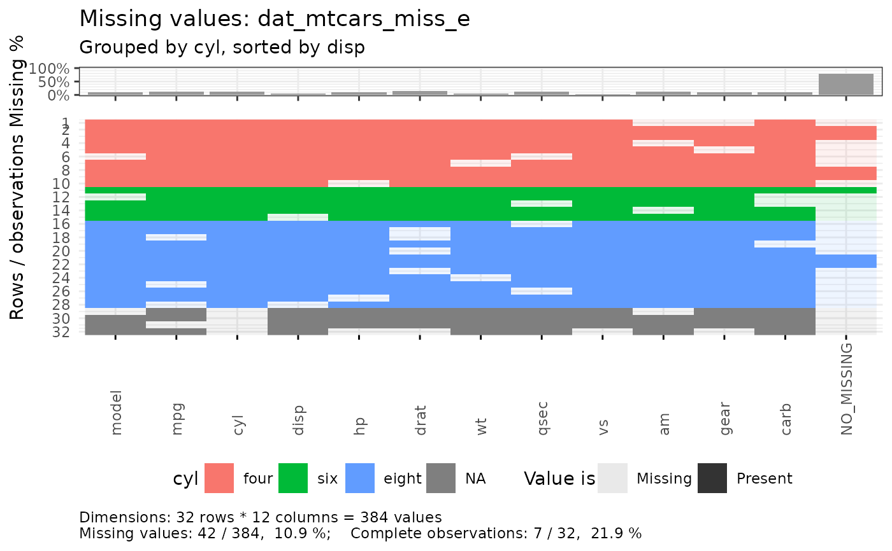
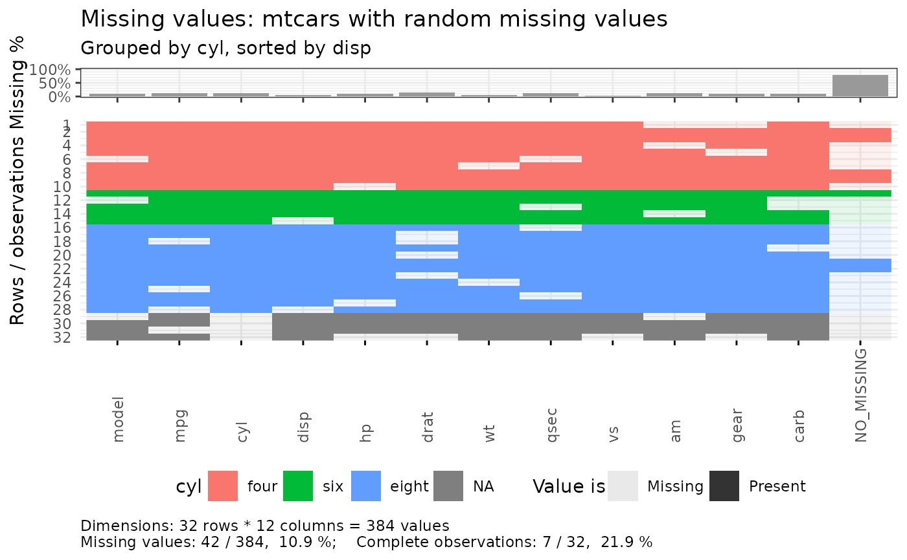

R/e_plot_missing.R
e_plot_missing.RdPlots missing data in a data.frame, possibly grouped by one variable and sorted by a second.
e_plot_missing(
dat_plot,
var_group = NULL,
sw_group_sort = FALSE,
var2_sort = NULL,
sw_title_data_name = TRUE,
sw_text_pct_miss = FALSE
)data.frame or tibble
variable name to group by (colors data)
TRUE/FALSE to sort by grouped variable
second variable name to sort by if data is grouped
TRUE/FALSE to include data object name in title or text string of title to use
TRUE/FALSE to include text values of percent missing on bar plot
# Generate missing values
dat_mtcars_miss_e <- dat_mtcars_e
prop_missing <- 0.10
n_missing <-
sample.int(
n = prod(dim(dat_mtcars_miss_e))
, size = round( prop_missing * prod(dim(dat_mtcars_miss_e)))
)
ind_missing <- expand.grid(1:dim(dat_mtcars_miss_e)[1], 1:dim(dat_mtcars_miss_e)[2])[n_missing, ]
for (i_row in seq_along(n_missing)) {
dat_mtcars_miss_e[ind_missing[i_row, 1], ind_missing[i_row, 2] ] <- NA
}
e_plot_missing(
dat_plot = dat_mtcars_miss_e
, var_group = "cyl"
, sw_group_sort = TRUE
, var2_sort = "disp"
)
#> Warning: Using alpha for a discrete variable is not advised.

e_plot_missing(
dat_plot = dat_mtcars_miss_e
, var_group = "cyl"
, sw_group_sort = TRUE
, var2_sort = "disp"
, sw_title_data_name = "mtcars with random missing values"
)
#> Warning: Using alpha for a discrete variable is not advised.
